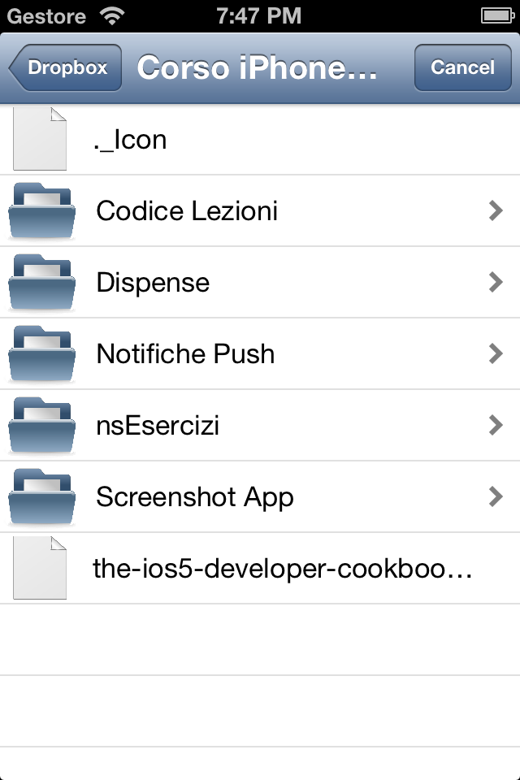
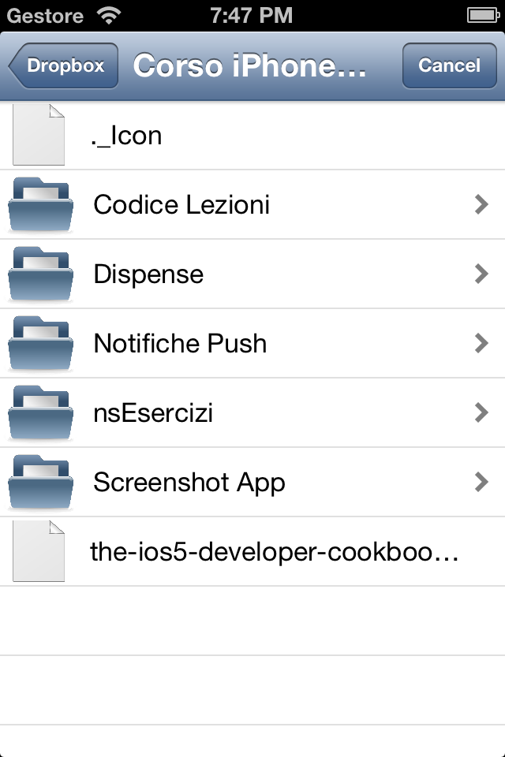
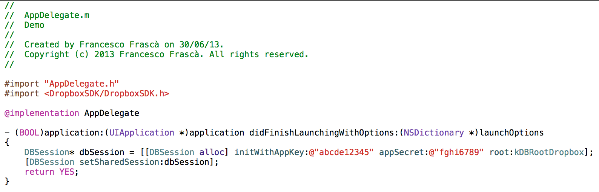

DropBoxPicker
A simple framework to use a PickerViewController to select file from a DropBox Account.
 Â 
 
Requirements
DropBoxPicker works on any iOS version and is compatible with only ARC projects.
It depends on the following Apple frameworks, which should already be included with most Xcode templates:
Foundation.frameworkUIKit.frameworkCoreGraphics.frameworkSecurity.frameworkQuartzCore.framework
You will need also to add DropBoxSDK.framework. This is the DropBox Core API SDK for ios.
Adding DropBoxPicker to your project
You can add DropBoxPicker as a framework to your project or workspace.
Download the latest code version or add the repository as a git submodule to your git-tracked project.
Open your project in Xcode, then drag and drop DropBoxPicker.framework onto your project in the Frameworks directory. You will need also to drag and drop the DropBoxPicker.bundle onto your project in the main bundle.
Include DropBoxPicker wherever you need it with #import <DropBoxPicker/DropBoxPicker.h>.
For the other configurations look at the DropBox Core API SDK Getting Started Guide.
Usage
-
Ensure that your application is still linked with DropBox:
if (![[DBSession sharedSession] isLinked]) [[DBSession sharedSession] linkFromController:self]; -
The class that want to start the picker needs to implement the
DBPDropBoxPickerDelegatelike this:@interface ViewController : UIViewController <DBPDropBoxPickerDelegate> -
To call the picker you have to use the following code:
DBPDropBoxPickerViewController *picker = [[DBPDropBoxPickerViewController alloc] initWithDropBoxPath:ROOT_PATH]; picker.delegate = self; UINavigationController *navController = [[UINavigationController alloc] initWithRootViewController:picker]; [self presentViewController:navController animated:YES completion:^{ }];ROOT_PATHhere, is a NSString that represent the dropbox path for the picker. When it starts, it is opened at this path.
You can use[[DBPDropBoxPickerViewController alloc] initWithDropBoxPath:@"/"]for the root path.
-
You need also to implement the three methods of the
DBPDropBoxPickerDelegate:- (void)errorChoosingFile:(DBPDropBoxPickerViewController *)picker { NSLog(@"Error choosing file"); [[picker navigationController] dismissViewControllerAnimated:NO completion:^{ }]; } - (void)canceledOperation:(DBPDropBoxPickerViewController *)picker { NSLog(@"Canceled operation"); [[picker navigationController] dismissViewControllerAnimated:NO completion:^{ }]; } - (void)dropBoxPickerController:(DBPDropBoxPickerViewController *)picker fileChoosedWithPath:(NSString *)dropBoxPath { NSLog(@"File choosed with path %@", dropBoxPath); [[picker navigationController] dismissViewControllerAnimated:NO completion:^{ }]; }The first method,
errorChoosingFile:, is called if there was an error with dropbox connection (meaby the application is not linked with the account).
The second one,canceledOperation:, is called when the user tap the cancel button and close the picker.
At last, the third one,dropBoxPickerController: fileChoosedWithPath:, is called when the user choose a file with the given dropBoxPath.
Then, you can use this path to download the file with the DropBoxSDK.
The Demo Project
Take a look at the bundled demo project to see a very simple example.
You have to change the APP_KEY and the APP_SECRET in the AppDelegate with yours.
You need also to change the APP_KEY in the "URL_Schemes" in "URL_Types" property in the Demo_Info.plist file. If your APP_KEY is, for example, "abcde12345" and your SECRET_KEY is "fghi6789" you have to change the Demo Project like the pictures below).


License
This code is distributed under the terms and conditions of the MIT license.